旧版法国与巴黎图片存档 · 1.9.46
Paris · 巴黎Versailles · 凡尔赛Marseille · 马赛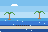
Nice · 尼斯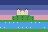
Lyon · 里昂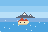
Annecy · 安纳西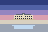
Bordeaux · 波尔多Biarritz · 比亚里茨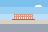
Toulouse · 图卢兹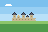
Carcassonne · 卡尔卡松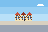
Rennes · 雷恩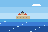
Saint-Malo · 圣马洛Rouen · 鲁昂Le Mont-Saint-Michel · 圣米歇尔山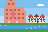
Strasbourg · 斯特拉斯堡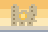
Reims · 兰斯Lille · 里尔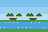
Amiens · 亚眠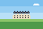
Chambord · 香波尔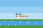
Chenonceau · 舍农索Nantes · 南特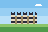
Angers · 昂热Dijon · 第戎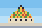
Beaune · 博讷Ajaccio · 阿雅克肖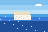
Bonifacio · 博尼法乔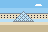
1er · Louvre · 第 1 区 · 卢浮宫2e · Bourse · 第 2 区 · 交易所3e · Temple · 第 3 区 · 共和国广场4e · Hôtel-de-Ville · 第 4 区 · 巴黎圣母院5e · Panthéon · 第 5 区 · 先贤祠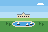
6e · Luxembourg · 第 6 区 · 卢森堡公园7e · Palais-Bourbon · 第 7 区 · 埃菲尔铁塔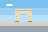
8e · Élysée · 第 8 区 · 凯旋门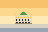
9e · Opéra · 第 9 区 · 加尼叶歌剧院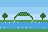
10e · Entrepôt · 第 10 区 · 圣马丁运河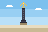
11e · Popincourt · 第 11 区 · 巴士底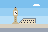
12e · Reuilly · 第 12 区 · 里昂火车站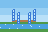
13e · Gobelins · 第 13 区 · 法国国家图书馆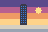
14e · Observatoire · 第 14 区 · 蒙帕纳斯大楼15e · Vaugirard · 第 15 区 · 雪铁龙公园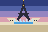
16e · Passy · 第 16 区 · 特罗卡德罗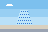
17e · Batignolles · 第 17 区 · 巴黎司法院18e · Butte-Montmartre · 第 18 区 · 蒙马特圣心堂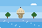
19e · Buttes-Chaumont · 第 19 区 · 肖蒙山丘公园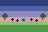
20e · Ménilmontant · 第 20 区 · 拉雪兹神父公墓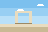
92 · Hauts-de-Seine · 上塞纳省 · 拉德芳斯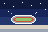
93 · Seine-Saint-Denis · 塞纳-圣但尼省 · 法兰西体育场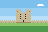
94 · Val-de-Marne · 马恩河谷省 · 樊尚城堡95 · Val-d'Oise · 瓦勒德瓦兹省 · 奥维尔教堂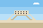
77 · Seine-et-Marne · 塞纳-马恩省 · 枫丹白露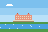
78 · Yvelines · 伊夫林省 · 圣日耳曼昂莱91 · Essonne · 埃松省 · 萨克雷同步辐射光源